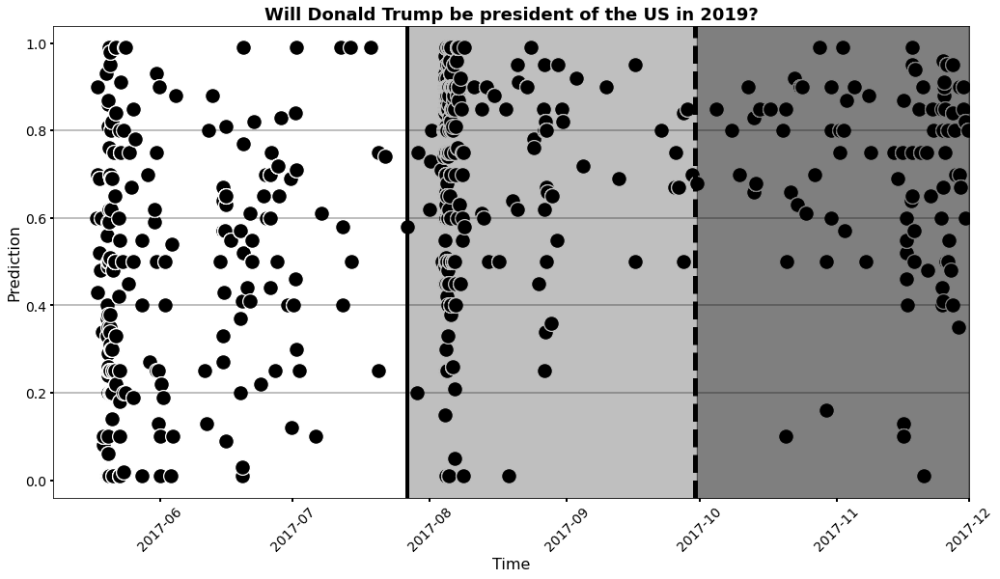

TAP Meeting April 19th, 2024
-
Overview
-
Probability forecasting of time-critical events
- Will the Donald Trump still be in office by Jan 1 2019?
- Will Manchester United score before half time?
- Will an artificial pancreas become mainstream by 2017?
-
Time-dependent and time-varying data
- Sport
- Politics
- War/Conflict
- Focus on constructing methods to extract unobservable information from time-series data.
-
Strategic changes in sport
- ex: Injuries or red cards
-
Opinion changes in forecasting questions (News influence, action, court verdicts)
- ex: Liz Truss mini budget
-
New technology introduction influencing war outcome
- ex: country A recieves anti-tank technology and distribution of losses changes after a point in time
-
Probability forecasting of time-critical events
-
Project 1: A method for dynamical probability forecast aggregation informed by Bayesian change point detection
-
- Method begins by constructing for all points in time a posterior probability that this point partitions the forecasts into two sets which are distributed differently. The posterior probabilities are then integrated to give a cumulative mass function from which a weighted median forecast is calculated.
-
\begin{equation} \label{bayestheorem1} P(t^*=t|\text{Forecasts}) = \frac{{P(\text{Forecasts}|t^*=t)}{P(t^*=t)}}{P(\text{Forecasts})} \end{equation}
-
- We begin with, as our parameter of interest, the location \(t^*\) (in forecaster time) of a single possible change point at some previous date (\( \text{an integer } i \in \{1,\ldots,N\}\) labelling one of the ordered forecasts).
- In the absence of evidence to the contrary, we assume a constant probability \( p \in [0,1] \)that at least one change point-inducing event occurs between forecasts.
- This motivates a geometric prior distribution on the time of the last change point, \( P(t^*=t) \propto (1-p)^{N-t} \) , which follows from the idea that for (\ t \) to have been the last change point there must have been \(N-t\) following inter-forecast periods without a subsequent change point.
-
- Inspired by work on Bayesian hypothesis testing by Holmes, we make significant use of the compound Dirichlet-categorical distribution to describe the number of forecasts falling in different sub-intervals, or bins, of \([0,1]\). We use the probabilities this distribution assigns to the observed bin-counts to inform the quantity \(P(\text{Forecasts}|t^*=t)\)
- The Dirichlet-categorical distribution, whose flexibility and tractability have made it popular amongst Bayesian statisticians, can be motivated by considering a two-stage data-generating process. In the first stage bin probabilities are drawn from a Dirichlet distribution and in the second stage bin-memberships are assigned to each of a given number of forecasts.
- The mass function for the Dirichlet-categorical distribution describes the marginal probabilities for the bin counts arising from such a process. Mathematically, this mass function can be arrived at by computing a weighted average of mass functions for categorical distributions, where the average is taken over a (Dirichlet) distribution of (unobserved) bin probabilities. The Dirichlet-categorical distribution assigns probability mass
-
\begin{equation}\label{DCmassfun} P(n_1,\ldots,n_K)=\frac{\Gamma(\sum \alpha_k)}{\Gamma(\sum n_k+\alpha_k)}\prod_{k=1}^{K}\frac{\Gamma(n_k+\alpha_k)}{\Gamma(\alpha_k)} \end{equation}
-
\begin{equation} \lim_{n_1,..,n_K \rightarrow \infty} \log P(n_1,\ldots,n_K) = N \sum_{k=1}^{K} \frac{n_k}{N} \log \left( \frac{n_k}{N} \right) \end{equation}
-
\begin{align} P(t^*=t|\text{Forecasts}) \propto& {P(\text{Forecasts}|t^*=t)}{P(t^*=t)} \notag \\ =&\frac{\Gamma(\sum \alpha_k)}{\Gamma(\sum n_k+\alpha_k)}\prod_{k=1}^{K}\frac{\Gamma(n_k+\alpha_k)}{\Gamma(\alpha_k)} \notag \\ & \times \frac{\Gamma(\sum \alpha_k')}{\Gamma(\sum n_k'+\alpha_k')}\prod_{k=1}^{K}\frac{\Gamma(n_k'+\alpha_k')}{\Gamma(\alpha_k')} \notag \\ & \times (1-p)^{N-t} \label{bayestheorem2} \end{align}
- We then evaluate for every candidate change point \(t=1,\ldots,N\), taking us from calendar time 17 May 2017 to 10 Oct 2017 in our example. With each evaluation, we are asking the question ``What is the probability that this set of forecasts is actually drawn from two different distributions, one before and another after our candidate \(t\)?" A visualisation of a single step in the process is shown in Figure where the two periods are highlighted with pink and blue shading, respectively. Having computed for each time point, we can normalize it to derive our posterior mass function for the location of the change point. The corresponding CMF then provides weights for our aggregated forecast.
 -
-
-
Project 2: Markov Decision Processes in Football Matches
-
-
Nobuyoshi Hirotsu, Yuki Masui, Yu Shimasaki, Masafumi Yoshimura, Modelling tactical changes in association football using a Markov game, IMA Journal of Management Mathematics, 2024;, dpae002, https://doi.org/10.1093/imaman/dpae002
-
Proposing using data from Stats Bomb of the UK Womens Super League where we have access to over 300 matches with almost 500,000 unique events
- Goal is to take a different approach to the industry leader Opta to calculate expected goals (xG)
- Distance to the goal.
- Angle to the goal.
- Goalkeeper position, giving us information on the likelihood that they’re able to make a save.
- The clarity the shooter has of the goal mouth, based on the positions of other players.
- The amount of pressure they are under from the opposition defenders.
- Shot type, such as which foot the shooter used or whether it was a volley/header/one-on-one.
- Pattern of play (e.g., open play, fast break, direct free-kick, corner kick, throw-in etc.).
- Information on the previous action, such as the type of assist (e.g., through ball, cross etc.).
The model uses several variables from before, and up to, the exact moment the shot was taken. It evaluates how over 20 variables affect the likelihood of a goal being scored. Some of the most important factors are listed below:
-
-